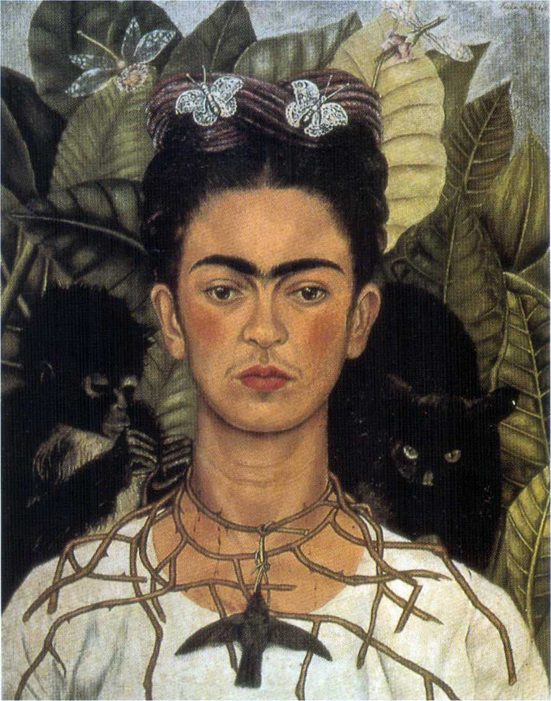
Autorretrato con Collar de Espinas
«Автопортрет с терновым ожерельем и колибри»
Картина написана в год развода с Диего Риверой (хотя они повторно поженились в том же году). Фрида переживает глубокий эмоциональный кризис, одиночество и физическую боль. Она несет терновый венец разбитого сердца, а надежда на счастье (колибри) мертва. Животные вокруг — её единственные спутники в боли.
Автопортрет • 1940
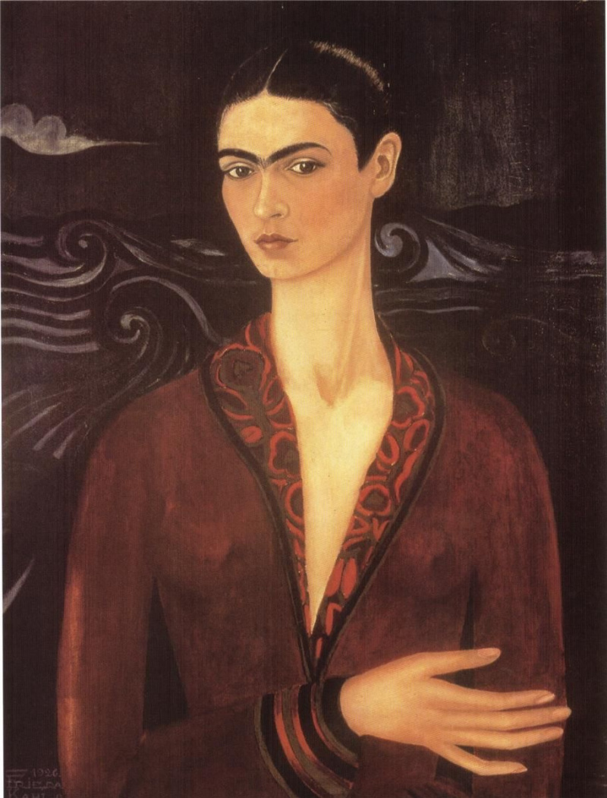
Autorretrato con traje de terciopelo
«Автопортрет в бархатном платье»
Это первая серьезная работа Фриды Кало, написанная в возрасте 19 лет. Картина создавалась в период восстановления после тяжелой аварии, когда художница была прикована к постели. Это первый автопортрет, где Фрида начинает исследовать собственную боль и личность, закладывая основу для всех своих будущих работ. Картина была подарена её первому парню, Алехандро Гомесу Ариасу.
Автопортрет • 1926
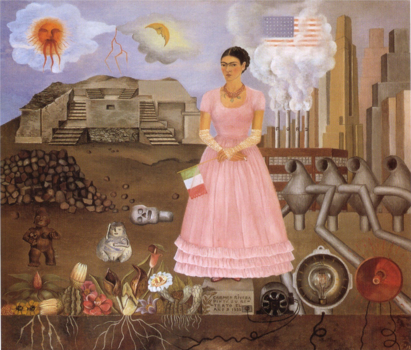
Autorretano en la frontera entre México y los Estados Unidos
«Автопортрет на границе между Мексикой и США»
Картина написана под впечатлением от жизни Фриды в США во время Великой депрессии, где она чувствовала себя чужой, скучая по Мексике. Фрида показывает себя как мост между двумя культурами, но явно тоскует по мексиканским корням, противопоставляя живую историю Мексики бездушному индустриальному прогрессу США.
Автопортрет • 1932
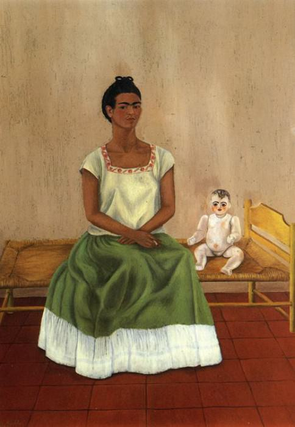
Yo y mi muñeca
«Я и моя кукла»
Картина читается как размышление о материнстве, одиночестве и травме. Фрида, которая не могла иметь детей после аварии, держит куклу как замену ребенку, но эта замена — холодная, искусственная, безжизненная. Кукла становится символом пустоты и несостоявшейся материнской любви.
Автопортрет • 1937
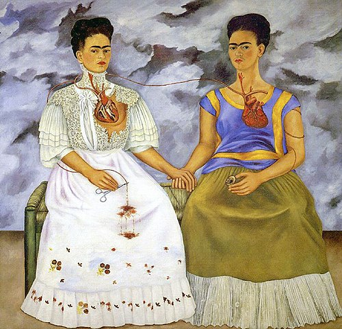
Las dos Fridas
«Две Фриды»
Фрида показывает расщепление личности после развода: одна часть (европейская, отвергнутая) умирает, другая (мексиканская, сильная) выживает. Но они неразрывно связаны — невозможно отрезать часть себя. Это также размышление о двух наследиях Фриды: европейском (отец) и мексиканском (мать).
Автопортрет • 1939
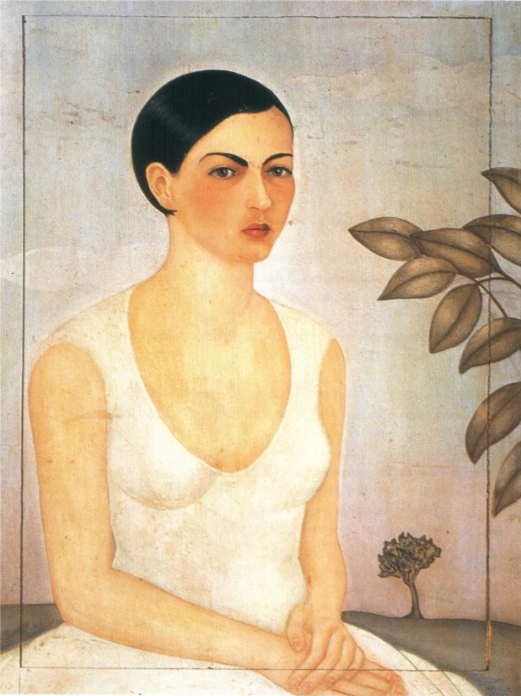
Retrato de Cristina, Mi Hermana
«Портрет Кристины, моей сестры»
Это единственное известное полотно, на котором Фрида Кало изобразила свою младшую сестру. Картина была создана в ключевой для художницы период — она оправлялась после тяжелой аварии 1925 года и начинала самостоятельный путь в искусстве.
Портрет • 1928
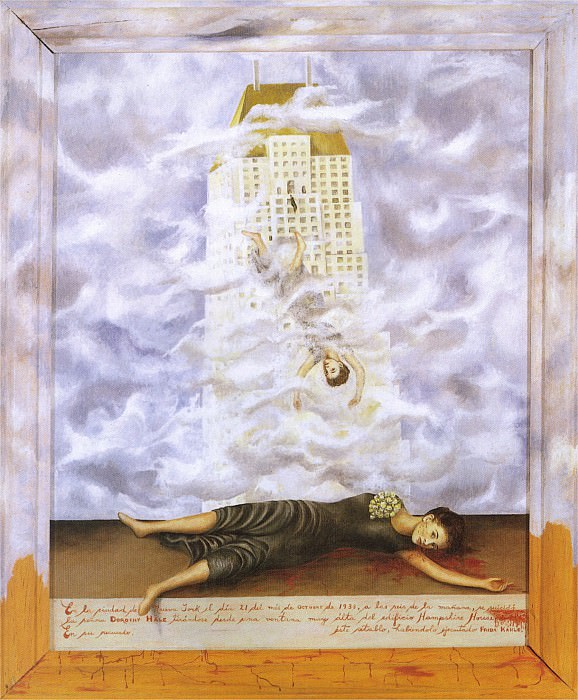
El suicidio de Dorothy Hale
«Самоубийство Дороти Хейл»
Фрида получила заказ от Клэр Бут Люс — богатой писательницы и подруги Дороти Хейл. Люс хотела, чтобы Фрида написала традиционный «рекуэрдо» (памятный портрет умершей) для матери Дороти. Вместо этого Фрида создала шокирующую картину, изображающую само событие самоубийства. Клэр Бут Люс была в ярости. Она хотела утешительный портрет, а получила документальную картину смерти. Она спрятала работу и, по слухам, хотела уничтожить её. В итоге она продала картину (или отдала), и сейчас она находится в частной коллекции.
Повествовательная картина • 1938
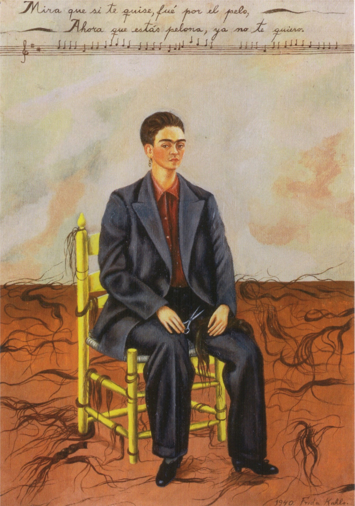
Autorretrato con cabello corto
«Автопортрет с остриженными волосами»
Это автопортрет прощания с ролью «жены». Фрида больше не хочет быть красивой для Диего. Она отказывается от своей женственности по его вкусу — и делает это публично, демонстративно. Но эта жесткость не победа. Пустая комната, одиночество, обрезанные волосы на полу — всё говорит о боли, которая стоит за этим бунтом. Она бросает вызов, но платит за это одиночеством.
Автопортрет • 1940
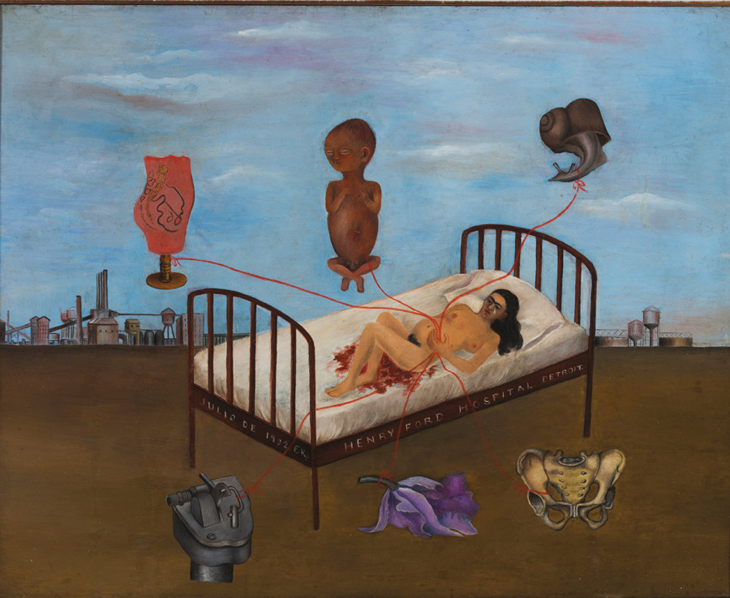
Henry Ford Hospital
«Больница Генри Форда»
«Больница Генри Форда» — это не автопортрет в классическом смысле, а документальная исповедь. Фрида не просто изображает себя — она визуализирует потерю. Эта картина — один из первых в истории искусства примеров откровенного изображения женского выкидыша. Фрида разбила табу: она показала не идеализированное материнство, а его травматическую сторону. Картина повлияла на феминистское искусство 1970-х годов (например, на работы Джуди Чикаго и Мириам Шапиро).
Автопортрет • 1932
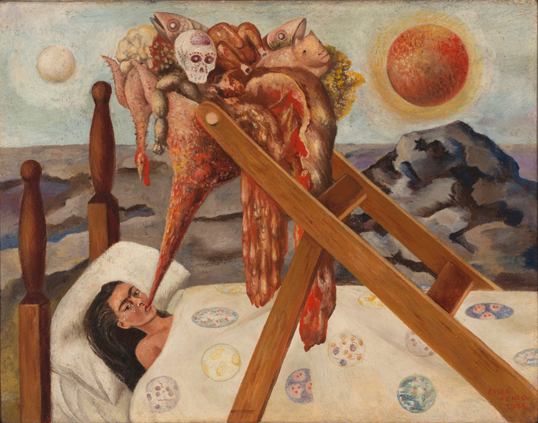
Sin esperanza
«Без надежды»
В 1945 году состояние Фриды резко ухудшилось. Из-за многочисленных операций и сильных болей она практически полностью потеряла аппетит и сильно истощала. Врачи, опасаясь за её жизнь, назначили строжайший постельный режим и насильственное кормление через каждые два часа пюреобразной пищей, чтобы хоть как-то поддерживать её силы. Сама Фрида воспринимала эту процедуру как пытку, что и легло в основу сюжета. На обороте холста она оставила надпись: «У меня не осталось ни капли надежды… Время движется в такт тому, что находится в данный момент в моем животе…»
Автопортрет • 1945
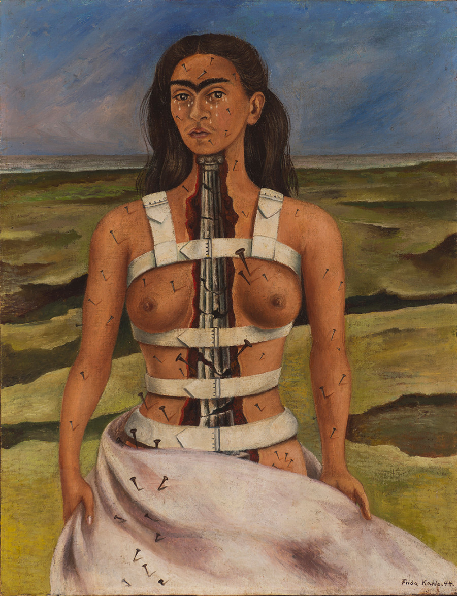
La columna rota
«Сломанная колонна»
К 1944 году здоровье Фриды, подорванное аварией 1925 года (когда её тело пронзил металлический поручень), окончательно ухудшилось. Она перенесла несколько сложных операций на позвоночнике, которые не принесли облегчения, а лишь усилили мучения. Чтобы просто стоять или сидеть, Фриде приходилось носить жёсткие корсеты (кожанные, гипсовые, металлические). «Сломанная колонна» — это визуализация того, как она чувствовала себя каждый день.
Автопортрет • 1944
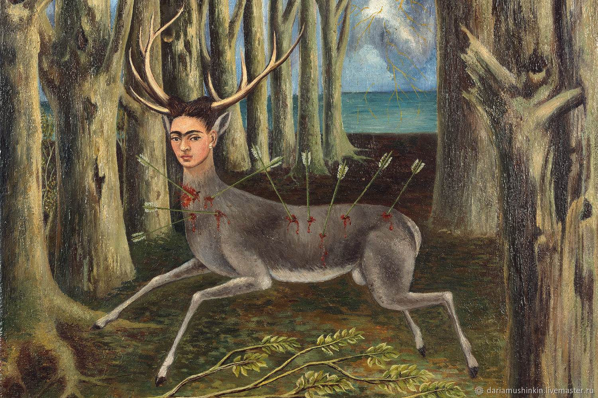
El venado herido
«Раненый олень»
В 1946 году Фрида перенесла сложную операцию на позвоночнике в Нью-Йорке (спондилодез — сращение позвонков). Операция не удалась: боль вернулась, а надежды на выздоровление рухнули. Фрида была морально сломлена. В письмах она писала о желании «убежать» от реальности. Картина была написана сразу после возвращения в Мексику, когда она лежала в постели, но уже могла держать кисть.
Автопортрет • 1946
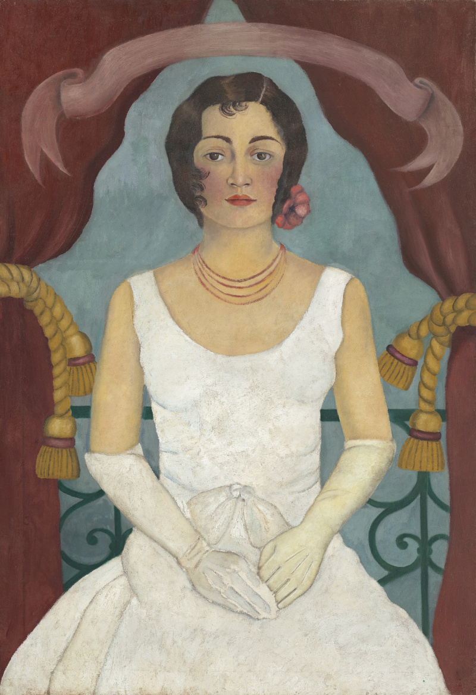
Retrato de una mujer de blanco
«Портрет женщины в белом»
Если автопортреты Фриды — это всегда крик, боль, страсть, политика, идентичность, то портреты других людей у неё почти всегда сдержанные, отстранённые, почти пустые. Она не психологизирует чужих людей. Она фиксирует их внешность вежливо и аккуратно, без вторжения во внутренний мир. «Портрет женщины в белом» — идеальный пример этого подхода. Женщина красива, элегантна, но мы ничего не знаем о ней. И Фрида не хочет, чтобы мы знали. Её задача — не раскрыть душу модели, а показать своё мастерство и, возможно, выразить своё отношение через незавершённость.
Портрет • 1930
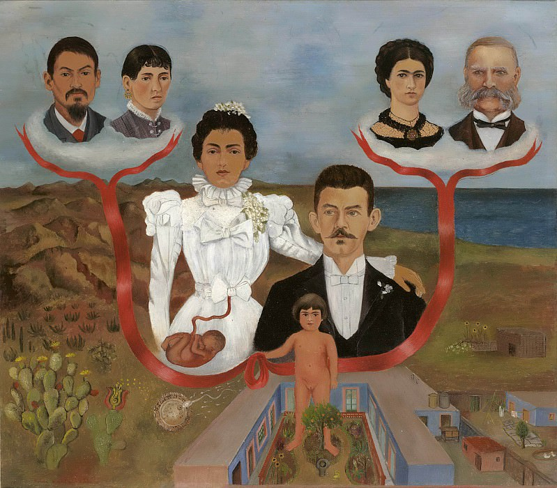
Mis abuelos, mis padres, y yo
«Мои бабушка и дедушка, мои родители и я»
Картина была написана в 1936 году — через год после принятия в Германии Нюрнбергских расовых законов. Эти законы предписывали евреям доказывать «чистоту крови» с помощью генеалогических схем, запрещали межрасовые браки и стали юридической основой для преследований. Фрида Кало, чей отец был немецким евреем (иммигрировавшим в Мексику), создаёт эту картину как прямой политический вызов нацизму. Она берёт тот самый формат — генеалогическое древо, который использовали нацисты, — и наполняет его противоположным смыслом: празднованием смешанного происхождения
Автопортрет • 1936
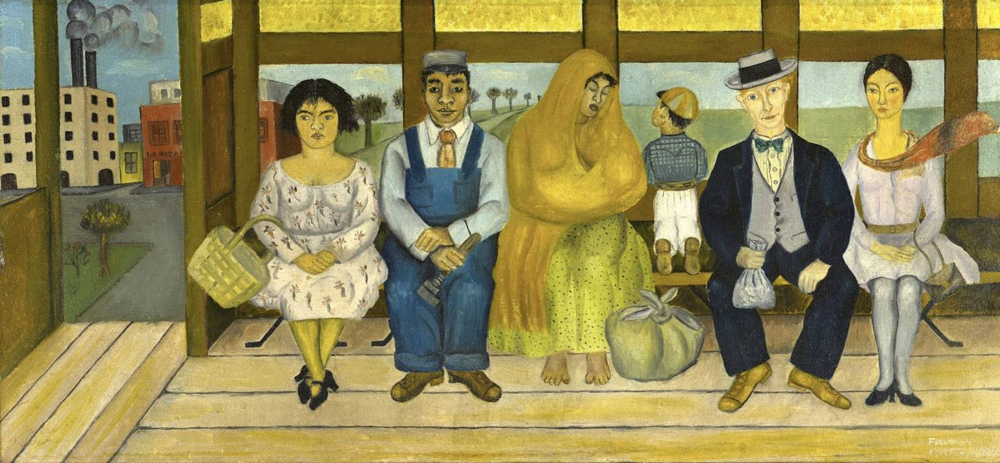
El camion
«Автобус»
Картина написана через четыре года после события, навсегда изменившего жизнь Фриды. 17 сентября 1925 года она ехала на автобусе, который столкнулся с трамваем. В результате аварии Фрида получила тяжелейшие травмы: сломанный позвоночник, таз, ключицу, одиннадцать переломов правой ноги и проникающее ранение металлическим поручнем. Именно после этого, прикованная к постели, она начала рисовать
Жанровая сцена • 1929
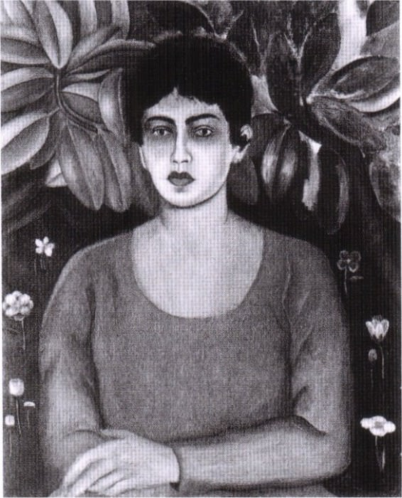
Retrato de Lupe Marín
«Портрет Лупе Марин»
Лупе Марин (1895–1983) была второй женой Диего Риверы (его брак с ней длился с 1922 по 1927 год) и матерью двух его дочерей. После развода она оставалась важной фигурой в кругу мексиканских художников и интеллектуалов — музой, натурщицей, писательницей. Когда Фрида начала встречаться с Риверой в 1928 году, Лупе отнеслась к юной сопернице с ревностью и даже угрожала ей оружием. Тем примечательнее, что в 1929 году, сразу после свадьбы Фриды и Диего, Фрида пишет этот портрет. Это был не просто акт примирения, но и смелое заявление: новая жена признаёт силу и место предыдущей.
Портрет • 1929
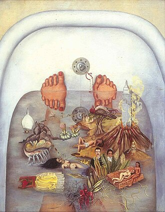
Lo que el agua me dio
«Что мне дала вода»
Это нестандартный автопортрет, на котором Фрида Кало изображает не своё лицо, а свои ноги, выглядывающие из ванны, а всё пространство воды заполнено десятками символических образов, составляющих её биографию: здесь и деформированная ступня (напоминание о полиомиелите и аварии), и извергающийся вулкан с небоскрёбом (столкновение Мексики и США), и обнажённая женская фигура с верёвкой на шее (ощущение удушения от отношений с Диего Риверой), и раковина с пулевыми отверстиями (бесплодие, выкидыши), и скелет с мёртвой птицей (постоянное присутствие смерти). Смысл картины раскрывается в её названии: вода (жизнь, время, подсознание) дала Фриде знание о себе как о ландшафте страдания и желания, способность увидеть свою жизнь целиком и переплавить травмы в искусство — это автопортрет-исповедь, где художница смотрит на зрителя не глазами, а всей своей судьбой, плавающей в ванне.
Автопортрет • 1938
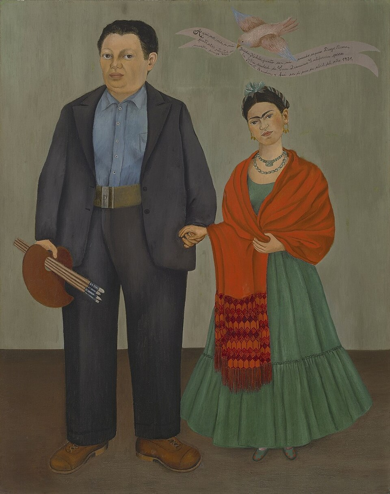
Diego y Frida
«Диего и Фрида»
Хотя формально это портрет пары, сама Фрида называла Диего любовью всей своей жизни и одновременно «вторым по счету несчастным случаем», который с ней произошел. Их отношения были полны неверности, ссор и страданий, но при этом они не могли жить друг без друга. Смысл этого портрета — визуальная метафора полного слияния двух личностей, их «неразделимости» в браке, попытка передать ту сверхсильную связь, когда грань между «я» и «ты» стирается, а также утверждение их принадлежности друг другу вопреки всем кризисам и разрывам, которые уже случались в их отношениях к 1944 году.
Автопортрет • 1944
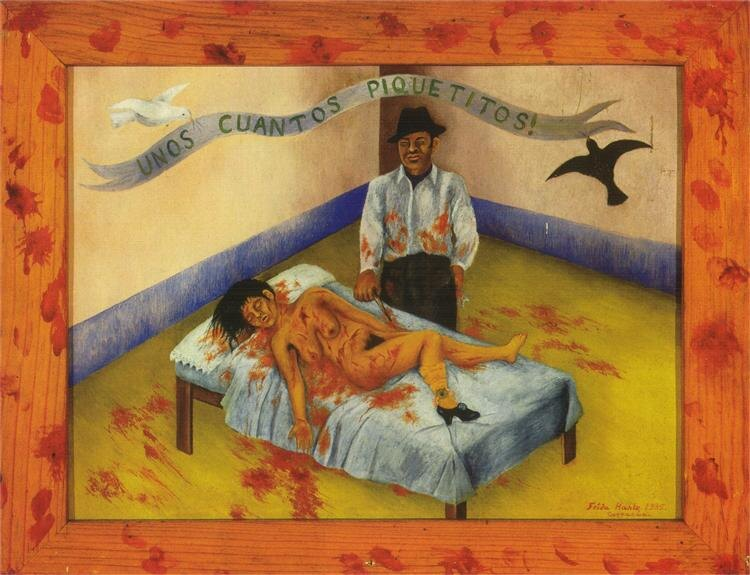
Unos cuantos piquetitos
«Всего-то несколько царапин!»
В 1934 году Фрида узнала о романе своего мужа Диего Риверы с её младшей и самой любимой сестрой Кристиной. Эта связь длилась около года и стала для Фриды невыносимым ударом — предательство двух самых близких людей . В это же время она прочитала в газете заметку о судебном процессе в Мехико: пьяный мужчина зарезал свою жену (по разным данным, нанёс около 20 ножевых ранений), а в суде оправдывался фразой: «Но это же были всего лишь несколько царапин!» (Unos cuantos piquetitos). Цинизм убийцы поразил Фриду, и она использовала эту историю как метафору своего душевного состояния .
Жанровая сцена • 1935
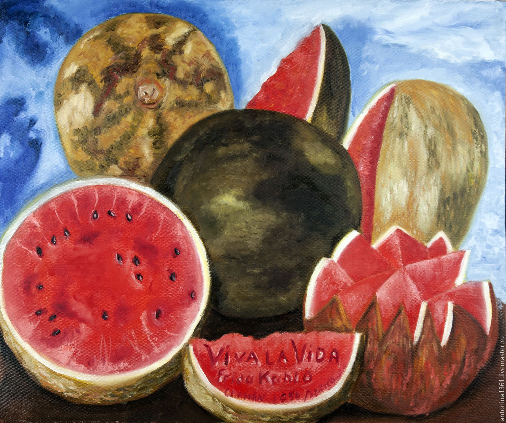
Viva la Vida (Sandías)
«Да здравствует жизнь (Арбузы)»
Вся жизнь Фриды Кало — это борьба с болью: полиомиелит в детстве, страшная авария в 18 лет (сломала позвоночник, таз, ключицу, 11 переломов ноги), десятки операций, выкидыши, измены мужа. Её картины часто напоминали крик боли («Сломанная колонна», «Больница Генри Форда», «Всего-то несколько царапин!»). Но последняя картина — не о боли. Она о любви к жизни. Фрида уходит не с жалобой или проклятием, а с восклицанием: «Да здравствует жизнь!» Это делает работу особенно сильной.
Натюрморт • 1954